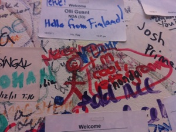

Google’d the Facebook out of Twitter?
Friday, November 11, 2011
oh hey!
Thank you so much for the kind words and support from my last post. I am so grateful to have such amazing friends, family and followers who believe in me and this endeavour. Thank you so much :) I appreciate it.
This post isn’t really anything special that I learned.. but its a story I wanted to share with you about my adventures on campus of Facebook and Google! These days in Silicon Valley were very special to me because people, who I have never met before, took the time out of their day to share with me where their work, their stories and friendship that I know I will cherish for the rest of my life.
Back in Toronto I met an awesome guy from Facebook (read “The View From Here” on that tale) who said he would connect me with a friend from HQ’s to get a tour and see what it is like at Facebook. I got to make the trip to Palo Alto to visit on Halloween... and let me tell you... people get VERY excited for Halloween.. I have never in my life seen others so stoked for the holiday.
Walking down California Ave seemed like the longest walk ever... I was pretty excited and had no idea what to expect. I actually walked in to the parking lot and asked some random dude “hey, do you know where Facebook is” .... and the dude was like... “Uh..this is all Facebook...” and pointed to the building beside me that had the smallest RED sign that said Facebook... Honestly, I was expecting a ginormous sign that said “LIKE THIS” or something... or at least flashing blue lights on a white building... I guess I can get a bit creative sometimes. (side thought.. maybe I should offer to help design the new campus Facebook is building... My friend said they are moving in the new year and its suppose to be pretty amazing... or I should just turn down my excitement levels.. one of the two :) ).
Facebook’s current office is right by Stanford’s campus and I walked in to this reception area where I had to sign a waiver form saying I am not going to steal any ideas or take pictures or video while inside the offices.... So my visuals are limited. But I met Sachin, this really great guy from Toronto who is now living and working in the Valley. We walked through this glass door and all of a sudden a group of people dressed up as horses run by us... Sachin looked at me and said.. “I think that’s security”... I burst out laughing, it was so random and awesome... Facebook gets pretty crazy on Halloween. So first we went for lunch, and they have this crazy big cafeteria. All the food was in theme with Halloween.... ladies fingers, bloody wings and more.
Greatest part... they had an frozen yogurt machine. :) I was pretty stoked about it. We ate lunch outside and walked around a bit. We passed by the developer who worked with Mark and created the “Like” button. :) I got the tour and there was this one area of desks that HR/recruiting were sitting at... and I had to double take what I saw..... because they were all dressed the exact same... they were all Where’s Waldo. lol
We walked down the hallways and some other cool things popped up. Sachin told me that all the art work on the walls were put there by employee (it was a collection of really unique stuff). Then Facebook has these vending machines that hold cameras, keyboards, mice (mouses?), and computer supplies in them. So there is no need for a supplies closet when you have a vending machine. :)
Then we walked by some of the meeting rooms and lounge areas. On the way out, Sachin invited me to meet some of his friends that were also from Canada visiting and living in the area. So we walked to the door and they have this wall that is covered with name tags and comments from all the people all over the world who have visited Facebook in the past.
I got to write my name on the wall :)
It was so awesome to have been able to go there. I couldn’t help by think about how Mark Zuckerburg’s idea has grown so much that it is integrated in to the lives of people all around the world. That’s pretty special to be a part of a company that is changing the way we live today.
After that, Sachin introduced me to some truly inspiring young people. It was so nice to be able to have a full conversation with these guys, because for the most part... I work during the day, catch up on emails after work when I get home and go to bed to start my next day. Sachin, Alex, Jen and John were great, and I am so thankful for their company and friendship. To think.. it was a random chance that we all met, yet we are all so enthusiastic to help each other achieve the things we are working towards. It is really awesome :)
I hung out the night in Palo Alto and was super stoked to be going to Mountain View the next day. My new friend Eric works at Google and the opportunity to meet him was also super random. Justine, one of the girls I was working with in Toronto met him travelling Europe and connected us before I got down there. Eric was so awesome, he hung out with me on the weekend and then offered to show me around Google - which is something for the last 8 years I would have never thought I could have the opportunity to do.
Eric took me out for dinner there, and showed me the GINORMOUS campus. I kid you not... my mouth was open the whole time while maintaining a smile. So in other words... i couldn’t talk the next day from an over extended jaw and sore cheek muscles from smiling hahha jk, but almost accurate.
Google really is a magical place, they do everything in their power to give their employees everything they need so they can focus on the work they’re doing.
Similar to Facebook, I had to sign a waiver and get a name tag to walk around, I got to play on this wall of screens with Google Earth! I had a joystick and could fly around the world like Aladdin flying on a carpet!!.. it was amazing. The food = awesome, and being in the cafeteria was like.. back packing in Europe! Everyone around you is speaking in different languages all in one central space. I feel so lucky to have been there. Oh! and they had bikes everywhere so you could grab one and go to your meetings on the other side of campus......
They had gyms, and post offices, and doctors, and tons of food courts, and the coolest meetings rooms, all conveniently located on this beautiful campus that made me wish the world was Google.. hahah Maybe it will be one day.
Eric showed me around some of the buildings.. And check out the Android building... they have statues in front of it!!! Best part.. the employees were also taking pictures with them! so I didn’t feel like that much of a tourist.
I was blown away by the community Google has created at their campus, it brought the most talented people from all over the world to one spot... and I’m so grateful to have been able to see what its like. :)
Thats pretty much it, the next day I booked my flight home and I have been getting ready for the next portion of the journey. I am getting excited for work on Monday with the Trico Foundation and stoked to learn more about non-profits and social entrepreneurship.
Thanks again for reading.
:)
Maegs
ps. for all my pictures.. I post them to the Facebook page. :) So check them out!
